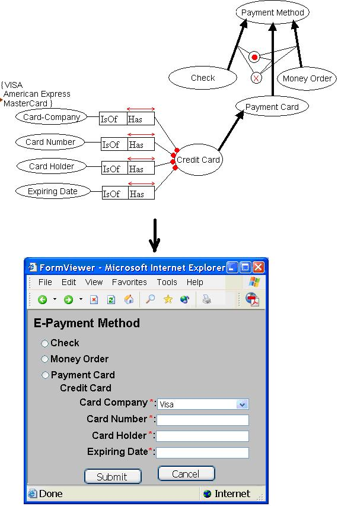

Thesis/Internship proposal
Ontology/ORM-Driven Web Forms
Contact: Dr. Mustafa Jarrar
Description: Given an ORM schema (/ontological commitment) one should be
able to automatically generation a web form based on this schema, see the figure
below. You need to develop a software that takes an ORM-ML file
(XML representation of an ORM schema) as input and then generates an HTML file.
As you see in the figure, ORM constraints such as mandatory are mapped into mandatory
fields; a value constraint is mapped into the “Select” HTML element; in case the
value constraint is not companied with an internal uniqueness, then the “Multiple”
HTML attribute is added; depending on the companion of the totality and exclusive
constraints, subtypes are mapped into radio buttons or check boxes; and so on.
The resulted HTML file will contain advanced features for Java Scripts. Some ORM
constraints will be validated at the server side. To know more about this topic,
please read section 6.7.11,
which presents the first prototype of this software.
Research issues (not required for internships): algorithms to map ORM
into tree structure, constraint satisfiability at the server-side.
Skills: Java, Tomcat, JavaScript, XML-schema, ORM-ML, etc.
See: Related
proposals.
